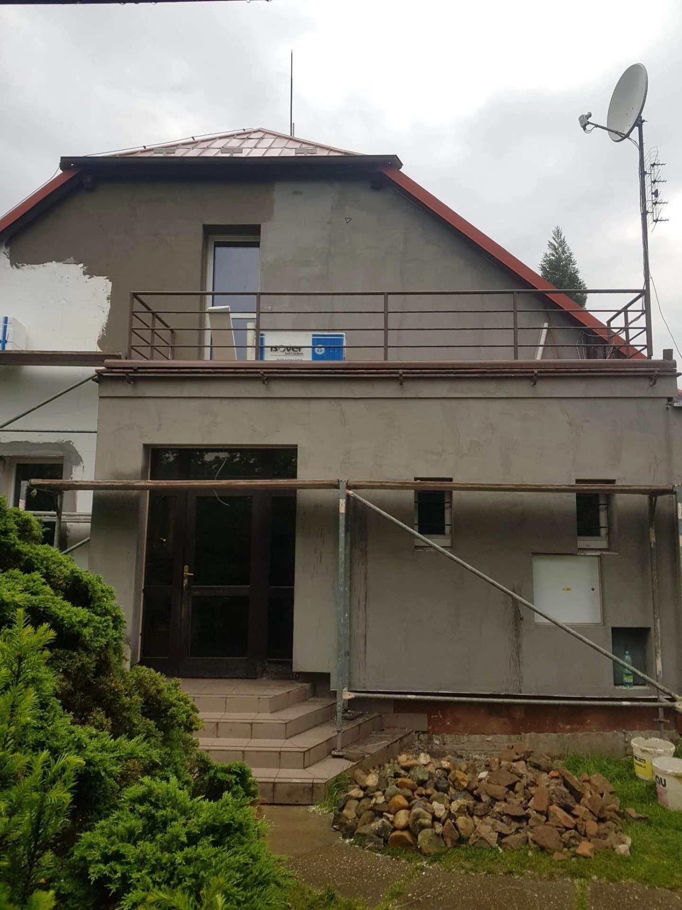

Kompletní fasáda rodinného domu včetně zateplení ve vesnici Nové Jirny, Praha-východ.
Zvláštností stavby byla variabilní tloušťka polystyrenu 30–160 mm dle orientace ke světovým stranám. Fasáda opatřena ochranným nátěrem. Dekorativní prvky kolem oken a rohových částí zdůrazněny odlišným barevným provedením dle přání klienta.
Fotogalerie projektu

Chcete podobný projekt?
Konzultace je zdarma a nezavazuje k ničemu.